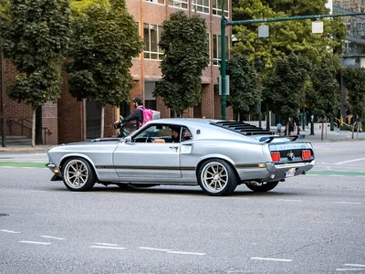
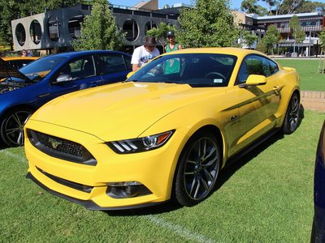

Πολυμέσα
Φωτογραφίες από έξι δεκαετίες Mustang και ένα επίσημο βίντεο της Ford.
Συλλογή φωτογραφιών
Πατήστε σε οποιαδήποτε μικρογραφία για να δείτε τη φωτογραφία σε μεγαλύτερο μέγεθος.







Βίντεο
Το επίσημο βίντεο παρουσίασης του Shelby GT500 από το κανάλι της Ford στο YouTube. Ενσωματώνεται με τον κώδικα που παρέχει η πλατφόρμα, χωρίς αποθήκευση αρχείου βίντεο.
Πηγές φωτογραφιών
Όλες οι φωτογραφίες της σελίδας προέρχονται από το Wikimedia Commons και διανέμονται με ελεύθερες άδειες χρήσης. Έχουν υποστεί περικοπή και συμπίεση ώστε να μειωθεί το μέγεθος των αρχείων.
- Mustang Fastback 1965 — Wikimedia Commons
- Mustang Mach 1 1969 — Wikimedia Commons
- Mustang II 1974 — Wikimedia Commons
- Mustang GT 2005 — Wikimedia Commons
- Mustang GT 2015 — Wikimedia Commons
- Mustang GT 2024 — Wikimedia Commons